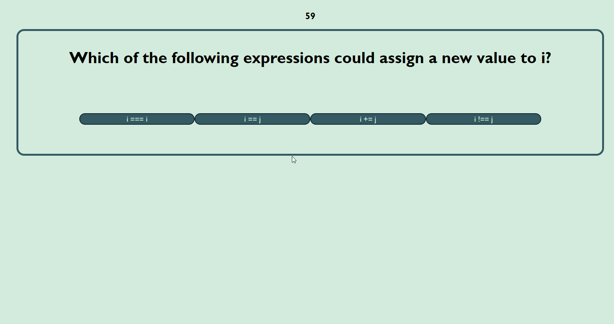
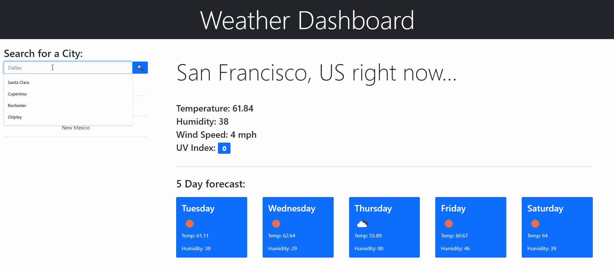

3D Art Gallery
A 3D Art Gallery pulling from the Rijks museum. Rendered using Three.js, generating shader maps at runtime.

Code Quiz
A code quiz built with jQuery and bootstrap. Allows users to save their high score and review questions they got wrong.

Weather Dashboard
A weather dashboard application built with Bootstrap and leveraging the OpenWeather API. Allows users to search for a 5 day forecast based on city.